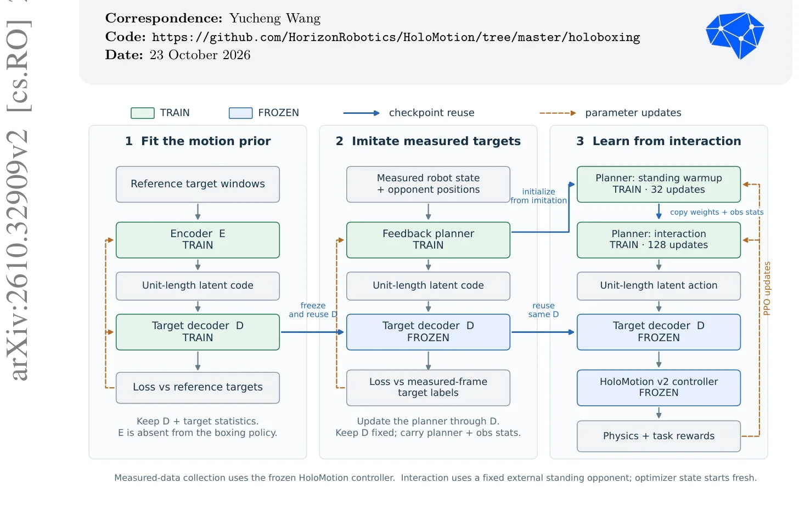
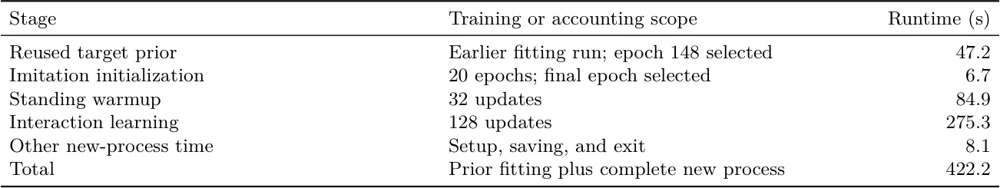
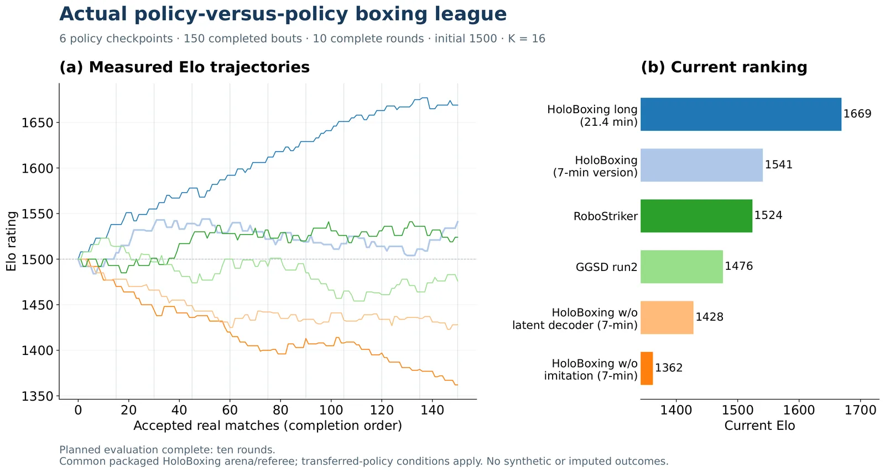

O Problema da Adaptação de Tarefa em Robótica
Treinar robôs humanoides para tarefas complexas de interação, como o boxe, é um desafio que combina execução motora precisa com tomada de decisão estratégica. Abordagens tradicionais frequentemente tentam aprender o controle das juntas e a lógica da tarefa simultaneamente. Isso cria um espaço de ação vasto e difícil de explorar, exigindo horas ou dias de treinamento em hardware potente. O paper HoloBoxing, da Horizon Robotics, propõe uma receita simples para contornar esse gargalo: assumir que a capacidade motora básica já existe e focar apenas no aprendizado da tarefa específica.
Os autores partem da premissa de que controladores de corpo inteiro pré-treinados podem reproduzir movimentos físicos básicos, como socos ou desvios, mas não sabem quando ou onde aplicá-los contra um oponente. O objetivo do HoloBoxing não é melhorar o controle motor em si, mas adaptar um controlador existente para o contexto de combate. Essa separação permite que o sistema aproveite conhecimentos motoros reutilizáveis e se concentre exclusivamente nas decisões de alto nível, resultando em um tempo de treinamento adicional de apenas sete minutos em uma única GPU.
Este artigo detalha a arquitetura do HoloBoxing, explicando como a separação de responsabilidades entre planejamento e execução viabiliza tal eficiência. Vamos analisar o mecanismo de decodificação latente, o papel da inicialização por imitação e os resultados competitivos obtidos em simulação, mantendo um olhar crítico sobre as limitações impostas pela dependência de um controlador pré-existente.

A Arquitetura de Duas Camadas
A inovação central do HoloBoxing reside na desconexão entre o que o robô sabe fazer (movimento) e o que ele decide fazer (tática). O sistema utiliza um controlador de corpo inteiro pré-treinado, chamado HoloMotion v2, que permanece congelado durante o treinamento de boxe. Este controlador é responsável por traduzir solicitações de movimento em comandos de juntas, garantindo que os movimentos sejam fisicamente executáveis e estáveis. Sobre esse controlador fixo, é construído um planejador compacto, que atua como a 'mente' tática do robô.
O planejador não gera comandos diretos de juntas. Em vez disso, ele solicita alvos futuros para pontos específicos do corpo. Essa abstração é crucial. Se o planejador tentasse prever diretamente as posições futuras de todas as partes do corpo, o espaço de saída seria enorme e difícil de aprender. O HoloBoxing reduz essa dimensionalidade através de uma representação latente estruturada, permitindo que o planejador foque apenas na intenção do movimento, enquanto o controlador inferior cuida da cinemática e dinâmica.
Essa arquitetura em duas camadas permite que o aprendizado de tarefa seja confinado a uma política superior compacta. O controlador inferior não precisa ser reajustado para cada nova tarefa; ele serve como uma biblioteca de habilidades motoras já validadas. O custo de treinamento medido pelo paper exclui o pré-treinamento do controlador HoloMotion v2, focando apenas nos minutos necessários para adaptar o planejador ao contexto de boxe. Isso redefine o benchmark de eficiência, deslocando o foco do custo absoluto para o custo de adaptação.
Decodificação Latente e Representação Compacta
Para tornar o espaço de ação do planejador tratável, os autores introduzem um decodificador aprendido. Este componente mapeia um vetor de ação latente de 32 dimensões para uma janela estruturada de alvos corporais futuros. Sem essa compressão, o planejador teria que gerenciar 225 coordenadas de corpo inteiro, o que tornaria a convergência do aprendizado por reforço extremamente lenta e instável. O vetor de 32 dimensões atua como um código de alto nível que o decodificador expande para instruções detalhadas.
O decodificador é treinado para reconstruir trajetórias de movimento a partir desses vetores latentes. A qualidade dessa representação é fundamental: ela não pode apenas minimizar o erro de reconstrução, mas também garantir que os alvos gerados sejam fisicamente executáveis pelo controlador congelado. O paper destaca que uma baixa perda de reconstrução sozinha é insuficiente; a representação deve preservar a viabilidade física dos movimentos solicitados. Isso implica que o decodificador aprende não apenas a forma do movimento, mas as restrições impostas pela cinemática do robô.
Durante o treinamento de tarefa, o planejador recebe o estado atual do robô e a posição do oponente como entrada. Ele então seleciona um vetor de ação latente, que é passado pelo decodificador para gerar os alvos de corpo. O controlador HoloMotion v2, congelado, recebe esses alvos e calcula os torques e posições de junta necessários para alcançá-los. Essa interface padronizada permite que o planejador seja treinado independentemente da complexidade da execução motora subjacente.
Inicialização por Imitação e Aprendizado por Reforço
Um dos maiores desafios no aprendizado por reforço para robótica é a exploração inicial. Começar do zero com políticas aleatórias pode levar a comportamentos instáveis ou perigosos, especialmente em tarefas de contato. O HoloBoxing mitiga isso através de uma fase de inicialização por imitação de estado medido. Antes de qualquer recompensa ser aplicada, o planejador é treinado para imitar comportamentos derivados de dados reais ou simulados de alta qualidade.
Nesta etapa, o controlador congelado é usado para rastrear movimentos de referência, coletando pares de observações de estado e alvos futuros executáveis. Um modelo supervisionado é então treinado para mapear o estado do robô para esses alvos. Isso fornece ao planejador uma política inicial robusta que já sabe como se mover de forma plausível. A imitação não ensina o boxe, mas ensina o robô a manter a postura e mover-se de forma coerente, estabelecendo uma base sólida para a refinamento posterior.
Após a inicialização, o sistema entra na fase de aprendizado por reforço. Aqui, o planejador é refinado para maximizar recompensas específicas de boxe, como acertar o oponente ou manter o equilíbrio. Como o controlador de execução está congelado e o decodificador já foi ajustado, o espaço de busca do planejador é pequeno e bem definido. O aprendizado por reforço atua apenas nos pesos do planejador, ajustando as decisões táticas para lidar com a dinâmica imprevisível de um oponente. O paper relata que a maior parte do tempo de treinamento de 7 minutos é gasta nesta fase de interação, após a representação e a inicialização estarem prontas.

Resultados na Liga de Boxe Simulado
Para avaliar a eficácia do método, os autores realizaram uma liga de boxe simulada envolvendo seis políticas diferentes. O HoloBoxing na sua versão primária (7 minutos) e na versão de maior orçamento (21,4 minutos) foram comparados contra outros métodos de aprendizado de combate, como RoboStriker e GGSD, além de versões ablativas do próprio HoloBoxing. A avaliação foi feita em um ambiente padronizado, com o mesmo robô, parâmetros físicos e árbitro para todos os participantes.
Os resultados mostram que a versão de 7 minutos alcançou a segunda posição na liga, com uma classificação Elo de 1541. A versão de 21,4 minutos liderou com 1669 pontos. É importante notar que os oponentes externos mantiveram seus pesos originais sem ajuste fino, garantindo que a comparação focasse na capacidade de adaptação do HoloBoxing. A versão primária venceu sete dos dez combates contra o GGSD e quatro contra o RoboStriker, demonstrando competividade significativa apesar do curto tempo de treinamento.
O desempenho do HoloBoxing destaca a importância das componentes removidas nos experimentos ablativos. A versão sem o decodificador latente caiu para a quinta posição (Elo 1428), e a versão sem inicialização por imitação caiu para a última (Elo 1362). Isso confirma que a representação compacta e a inicialização supervisionada são críticas para o sucesso do pipeline. Sem elas, o aprendizado por reforço sozinha não consegue convergir para um comportamento eficaz dentro do mesmo orçamento de atualizações.

Análise Crítica e Limitações
Embora os resultados sejam impressionantes em termos de eficiência, o paper apresenta limitações claras que devem ser consideradas. O método depende inteiramente da existência de um controlador de corpo inteiro pré-treinado de alta qualidade. Se o controlador base não puder executar os alvos gerados pelo decodificador, todo o pipeline falha. A generalização do HoloBoxing para outros robôs ou tarefas exigiria o desenvolvimento ou aquisição desse controlador base, o que pode ser um custo significativo não refletido no tempo de 7 minutos.
Além disso, os experimentos são realizados inteiramente em simulação. A transferência para o mundo real, conhecida como sim-to-real, introduz ruídos, atrasos e imperfeições mecânicas que não estão presentes no ambiente simulado. O paper reconhece que o teste em robôs reais e a transferência de domínio são trabalhos futuros. A robustez do sistema a perturbações externas e a precisão do modelo físico também são fatores que podem afetar o desempenho fora da simulação.
Outra limitação é o corpus de movimento utilizado para o ajuste da representação latente. O paper menciona o uso de um corpus de movimento pequeno e uma única semente de treinamento para a tarefa. Isso levanta questões sobre a estabilidade e a generalização do método. Estudos independentes com múltiplas sementes e corpora de movimento mais diversificados seriam necessários para isolar os efeitos das componentes e validar a consistência do pipeline. A avaliação também se concentra em um único tipo de tarefa (boxe), e a aplicabilidade a outras interações físicas não é explorada.
Conclusão
O HoloBoxing apresenta uma receita pragmática para a adaptação de tarefas em robótica humanaide. Ao separar explicitamente a execução motora das decisões de tarefa, os autores conseguem reduzir drasticamente o custo de treinamento para novas habilidades. O uso de um decodificador latente compacto e a inicialização por imitação permitem que o aprendizado por reforço converge rapidamente para comportamentos competitivos.
Os resultados na liga simulada validam a abordagem, mostrando que um robô pode aprender a boxear de forma eficaz em minutos de treinamento específico, desde que as habilidades motoras básicas já estejam disponíveis. Isso representa um passo significativo em direção a robôs mais versáteis e adaptáveis, capazes de aprender novas tarefas sem a necessidade de retreinamento completo. No entanto, a dependência de controladores pré-treinados e a limitação ao ambiente simulado destacam os desafios restantes para a implementação prática em larga escala.
O que fica
- Separação clara entre o controlador motor congelado (execução) e o planejador de tarefas (decisão), reduzindo drasticamente a complexidade do aprendizado.
- Uso de um decodificador latente de 32 dimensões para representar alvos corporais futuros, substituindo a previsão direta de 225 coordenadas.
- Inicialização por imitação de estado medido antes do aprendizado por reforço, fornecendo um comportamento inicial estável para exploração.
- O método alcançou a segunda posição em uma liga simulada de boxe contra outros agentes, com um custo computacional marginal após o pré-treinamento.
Paper original: HoloBoxing: A Simple Recipe for Humanoid Boxing with 7 Minutes of Single-GPU Training
Comentários
Nenhum comentário ainda. Seja o primeiro.